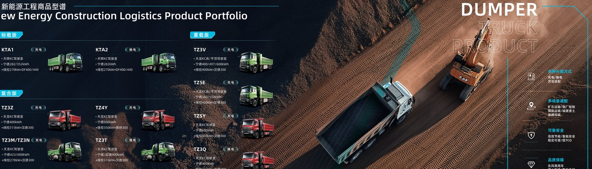

An electric truck crosses an ocean as a rolling lithium battery, so sea freight follows rules that do not apply to diesel trucks. The central rule is state of charge: most carriers require the battery to sail at or below about 30 percent SOC. This guide walks fleet buyers through the SOC limit, the IMO and carrier policies, and how a Dongfeng EV truck such as the TE46 electric terminal tractor is prepared for the voyage to the Philippines electric truck market.
A lithium battery at low charge stores less energy and releases it more slowly if damaged, which lowers the fire risk during a 2 to 4 week ocean voyage. Maritime insurers and carriers therefore cap SOC near 30 percent for loose packs and for complete vehicles under UN 3171. A 262 kWh CATL LFP pack at 30 percent holds about 79 kWh, enough for yard moves at the port but far below the energy that would sustain a serious thermal event. The limit is a precaution, not a sign of a weak battery, and it has no effect on the pack once recharged at destination. The 8-year or 4,500-cycle warranty is likewise unaffected because the cells are simply stored at partial charge, which is gentler than a full charge.
The International Maritime Organization groups EV trucks under the IMDG Code. A complete electric truck is usually declared UN 3171, "vehicle powered by a lithium battery," which is less restricted than loose cells under UN 3480. The carrier still requires the UN 38.3 certificate, the MSDS and a transport declaration. Some lines add their own rules, for example a hard 30 percent SOC cap or a requirement that the traction battery be isolated from the 12 V system. The checklist below covers what lines commonly ask for.
Carriers update these rules yearly, so Shaanxi Fenghan Trading Co., Ltd confirms the active policy with the booked line one week before loading and adjusts the prep if a stricter cap appears. A buyer who assumes the old 50 percent rule can be turned away at the gate, so the confirmation step protects the schedule.
At the Xi'an staging yard, technicians set the pack to about 30 percent SOC, engage the isolation switch and label the cutoff. The TE46 electric terminal tractor with its 262 kWh CATL LFP pack and 282 kW motor is driven or low-loaded onto the vessel, then chocked and lashed to the deck. Because the TE46 offers a 6-minute battery swap option, the swap cartridge is secured separately and also drained to the SOC limit. The whole prep takes about half a day per unit and is documented with photos that travel with the bill of lading. The 30 percent level is logged by the truck's own battery management system, so the number on the form matches the pack, not a guess.
Two methods move an electric truck overseas: Roll-on Roll-off (RoRo) and container. The table compares them for a typical order to Manila.
| Method | Transit | Cost per unit | Best for |
|---|---|---|---|
| RoRo | 10 to 14 days | $1,800 to $2,800 | Driveable tractors, fast turnaround |
| 40ft container | 12 to 18 days | $2,200 to $3,400 | Crated dumps, extra protection |
| Flat rack | 12 to 18 days | $2,600 to $3,800 | Oversize 8x4 dump trucks |
RoRo is common for the TE46 electric terminal tractor because it rolls on under its own power at 30 percent SOC and rolls off in Manila ready for a charge. The Philippines electric truck market favors RoRo for frequent, smaller orders. Container shipping suits the larger TZ3V dump at FOB $130,000 to $160,000 because crating protects the 8x4 chassis from deck spray, though it adds a day of loading at each end.
On arrival, the buyer inspects the pack enclosure, confirms SOC is still within the declared band, and charges to full on a 350 kW DC charger, which takes 45 to 90 minutes for 20 to 80 percent. The 8-year or 4,500-cycle CATL LFP warranty is unaffected by the low-SOC voyage. Shaanxi Fenghan Trading Co., Ltd includes a post-arrival checklist and can recommend Manila charging points. For the TE46 electric terminal tractor at FOB $68,000 to $85,000, the sea freight and SOC prep add a small, predictable cost to a fast deployment. A typical Manila delivery sees the truck back at 90 percent SOC within two hours of discharge, ready for yard duty the same shift.
To plan a budget, add the line items below for a single TE46 electric terminal tractor moving to Manila. Inland haul from Xi'an to the load port runs $600 to $1,200 depending on distance. Ocean RoRo is $1,800 to $2,800. Destination handling and customs brokerage in the Philippines run $400 to $900. The SOC set and isolation labor are included by the exporter at no separate charge on most orders. Total landed logistics for one tractor therefore sits near $2,800 to $4,900, a small fraction of the $68,000 to $85,000 FOB price. Spreading that cost across a 5-year life adds only a few dollars per operating day.
Book the vessel 3 to 4 weeks ahead, confirm the carrier SOC policy in writing, and align the SOC set with the load port schedule so the pack is not sitting at 30 percent for long on the quay. Budget $1,800 to $3,800 per unit depending on method, plus $1,200 to $2,500 inland haul in China. The Philippines electric truck market is served from Shanghai and Shenzhen with 10 to 18 day transit, and Shaanxi Fenghan Trading Co., Ltd manages the full chain from Xi'an to your Manila yard. First-time buyers should also pre-arrange a Manila charger slot so the truck is not idle on the quay waiting for its first top-up.
Marine cargo insurance for an EV truck usually carries a small loading because of the battery, but premiums stay low when the UN 38.3 and SOC documents are complete. Underwriters ask for the declared SOC at load, the isolation status and the pack model, and a clean file keeps the rate near a standard vehicle policy. A buyer should declare the battery separately rather than hiding it inside the vehicle value, because a vague declaration can void a claim if damage occurs. For the TE46 electric terminal tractor at FOB $68,000 to $85,000, the extra insurance cost is typically $80 to $200 per unit for the voyage, a minor line against the value protected. Keep the pre-load photos of the pack enclosure as evidence that the truck shipped undamaged and at the declared state of charge.
Another risk is the isolation switch left in the ON position, which can drain the 12 V auxiliary battery during the 10 to 18 day transit and leave the truck unable to wake on arrival. The staging team at Xi'an confirms the master switch is OFF and logs it, but the buyer should re-verify during the discharge inspection. A flat 12 V battery is a five-minute jump, yet it has delayed unloads by a day when the crew was unprepared. The Philippines electric truck market benefits from a simple arrival checklist that the Manila agent runs before the truck is released from the terminal.
Finally, never ship a loose pack above the carrier SOC cap even if the plant offers a full charge for a road test. Drain it back to 30 percent before sealing, because a surprise 80 percent reading at the gate can be rejected and re-handled at the shipper's cost. Planning the SOC set the day before loading removes this last-minute risk and keeps the TE46 electric terminal tractor on the booked vessel rather than the next one.
Ready to electrify your fleet? Contact Shaanxi Fenghan Trading — authorized Dongfeng EV truck exporter. WhatsApp: +86 153 1943 1311 | Email: sales@fenghan-trade.com | dongfengevtrucks.com
🌐 Our Network: Fenghan Trade (SAGMOTO/SHACMAN Truck Export) · SAGMOTO heavy duty diesel trucks